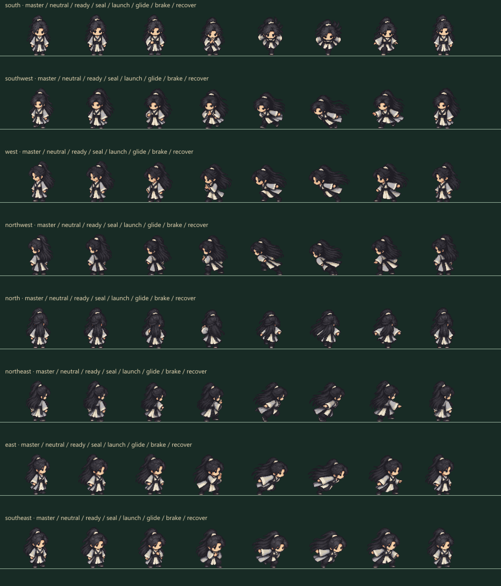
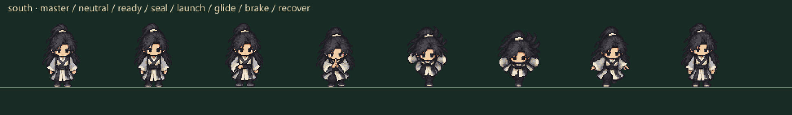

Master pixel đã chốt
Chuẩn tỷ lệ tĩnh.
VÂN HẢI ĐẠO ĐỒ · NGỰ PHONG BỘ · BODY 01
Lấy thế → kết ấn → lướt → hãm → hồi thế. Giữ bộ pixel tám hướng vừa chốt làm mốc đầu/thân; xem thân riêng và hiệu ứng gió ghép trên map.
48 pose mới / tám hướng. Nhịp 167 ms lấy thế · 250 ms lướt · 167 ms hồi thế. Bản xem ART dùng đường lướt minh họa, chưa thay bộ trong game.
Chuẩn tỷ lệ tĩnh.
Cùng điểm đất và cỡ thế giới trong Three. Gió là sequence R01 riêng; bóng lấy từ lịch sử vị trí/pose, không vẽ vào thân. Màn hẹp tập trung bản mới; hai bản so sánh vẫn nằm ở các ô phía trên. Camera 2× có thể kéo ngang để kiểm.
Mỗi hàng: master đã chốt, neutral nguồn mới và sáu pose Ngự Phong. Cùng scale trong từng source; không fit người theo từng pose.


192 pose Pixel02 giữ nguyên hash. Nguồn mỗi hướng có neutral để đo scale chung. Canvas lướt 112×96 / chân (56,88) chỉ thêm khoảng trống cho tóc/tay. Lift 0–3 px thuộc trình bày; chân thế giới và điểm xếp lớp không đổi.
Raster tạo bằng ImageGen built-in, source/prompt/registration/hash lưu cùng gói. PixelLab/skeleton chưa tích hợp. Đây là ART review, chưa thay bộ trên sân server và chưa nghiệm thu đủ mọi action người chơi.